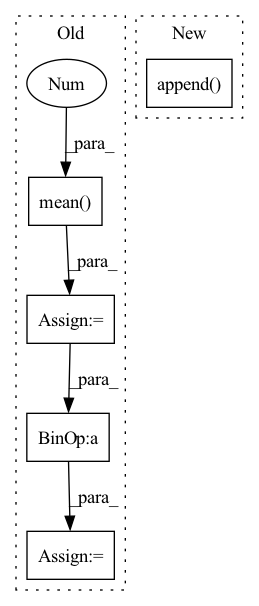

Pattern ID :2518

Before Change
// [n, h*w, k]
logit = self._select(x)
logit = logit - logit.mean(1, keepdim=True)
logit = logit / logit.std(1, keepdim=True)
meanLogit = logit.detach().mean(1)
// [n, k], 3σ rule
bernoulli = Bernoulli(logits=meanLogit - 3.0)
// [h*w, n, k] -> [n, h*w, k] (0 or 1 -> choose or not choose)
randomFalseMask = bernoulli.sample((logit.shape[1], )).permute(1, 0, 2)
randomFalseMask *= -1e9
bernoulli = Bernoulli(logits=-meanLogit - 3.0)
randomTrueMask = bernoulli.sample((logit.shape[1], )).permute(1, 0, 2)
randomTrueMask *= 1e9
maskedLogit = logit + randomFalseMask + randomTrueMask
sample = F.gumbel_softmax(maskedLogit, temp, True)
After Change
codebookQ = self._codebookQuery(codebook)
// [n, h*w, c]
x = self._encoder(encoderIn, codebookQ)
xs.append(x)
// [n, h*w, k]
logit = self._select(x)
// [k]
In pattern: SUPERPATTERN
Frequency: 3
Non-data size: 5
Instances
Fragment ID: 8249469
Project Name: xiaosu-zhu/mcquic
Commit Name: ff056abb47b531e42496967adda543c562e1cefd
Time: 2021-05-12
Author: xiaosu.zhu@outlook.com
File Name: src/mcqc/models/quantizer.py
M Class Name: TransformerQuantizer
N Class Name: TransformerQuantizer
M Method Name: forward(3)
N Method Name: forward(3)
M Parent Class: nn.Module
N Parent Class: nn.Module
M File Name: src/mcqc/models/quantizer.py
N File Name: src/mcqc/models/quantizer.py
M Start Line: 505
M End Line: 554
N Start Line: 508
N End Line: 554
'>
Before Change
batchWiseLogit = logit.reshape(len(logit), -1, logit.shape[-1])
// [n, k]
summedProb = batchWiseLogit.mean(1).sigmoid()
target = torch.ones_like(summedProb) / 2.0
// [n, ]
reg = F.binary_cross_entropy(summedProb, target, reduction="none").sum(-1)
// [n, k] -> [n, ]
diversity = batchWiseLogit.var(1).sum(-1)
reg -= diversity
// posterior = OneHotCategorical(logits=summedLogit, validate_args=False)
// prior = OneHotCategorical(probs=torch.ones_like(summedLogit) / summedLogit.shape[-1], validate_args=False)
After Change
for latent, q in zip(latents, quantizeds):
l2QLoss.append(F.mse_loss(latent.detach(), q, reduction="none").mean(axis=(1, 2, 3)))
l1QLoss.append(F.l1_loss(latent.detach(), q, reduction="none").mean(axis=(1, 2, 3)))
l2QLoss.append(0.1 * F.mse_loss(latent, q.detach(), reduction="none").mean(axis=(1, 2, 3)))
l1QLoss.append(0.1 * F.l1_loss(latent, q.detach(), reduction="none").mean(axis=(1, 2, 3)))
l1QLoss = sum(l1QLoss)
l2QLoss = sum(l2QLoss)
'>
Fragment ID: 8249447
Project Name: xiaosu-zhu/mcquic
Commit Name: a70c627dfb797c38494d697f152f70f80bea53e3
Time: 2021-03-21
Author: xiaosu.zhu@outlook.com
File Name: src/mcqc/losses/structural.py
M Class Name: CompressionLossTwoStage
N Class Name: CompressionLossTwoStage
M Method Name: forward(8)
N Method Name: forward(8)
M Parent Class: nn.Module
N Parent Class: nn.Module
M File Name: src/mcqc/losses/structural.py
N File Name: src/mcqc/losses/structural.py
M Start Line: 49
M End Line: 86
N Start Line: 49
N End Line: 93
'>
Before Change
// diversity = torch.minimum(var, torch.ones_like(var))
// reg -= diversity
diversity = batchWiseLogit.std(1).mean(-1).sigmoid()
// summedProb = batchWiseLogit.sum(1)
// posterior = OneHotCategorical(logits=summedProb)
// prior = OneHotCategorical(probs=torch.ones_like(summedProb) / summedProb.shape[-1])
// reg = torch.distributions.kl_divergence(posterior, prior) / diversity
reg = compute_penalties(batchWiseLogit, allowed_entropy=0.1, individual_entropy_coeff=cv, allowed_js=4.0, js_coeff=cv, cv_coeff=cv, eps=Consts.Eps)
reg = reg / diversity
regs.append(reg)
regs = sum(regs)
return ssimLoss, l1Loss + l2Loss, l1QLoss + l2QLoss, regs // + 10 * stdReg
After Change
l2QLoss.append(F.mse_loss(latent.detach(), q, reduction="none").mean(axis=(1, 2, 3)))
l1QLoss.append(F.l1_loss(latent.detach(), q, reduction="none").mean(axis=(1, 2, 3)))
l2QLoss.append(0.00001 * F.mse_loss(latent, q.detach(), reduction="none").mean(axis=(1, 2, 3)))
l1QLoss.append(0.00001 * F.l1_loss(latent, q.detach(), reduction="none").mean(axis=(1, 2, 3)))
l1QLoss = sum(l1QLoss)
l2QLoss = sum(l2QLoss)
'>
Fragment ID: 8249458
Project Name: xiaosu-zhu/mcquic
Commit Name: fea4d517415acb825c6282b84ea39c0989abf5fc
Time: 2021-03-23
Author: xiaosu.zhu@outlook.com
File Name: src/mcqc/losses/structural.py
M Class Name: CompressionLossTwoStage
N Class Name: CompressionLossTwoStage
M Method Name: forward(8)
N Method Name: forward(8)
M Parent Class: nn.Module
N Parent Class: nn.Module
M File Name: src/mcqc/losses/structural.py
N File Name: src/mcqc/losses/structural.py
M Start Line: 69
M End Line: 91
N Start Line: 53
N End Line: 60